Following on from my previous post on solving futoshiki puzzles, I wanted to see how feasible it would be to reliably detect and segment a futoshiki puzzle grid from an image without using a clunky capture grid. It works surprisingly well even when trained on a tiny dataset!
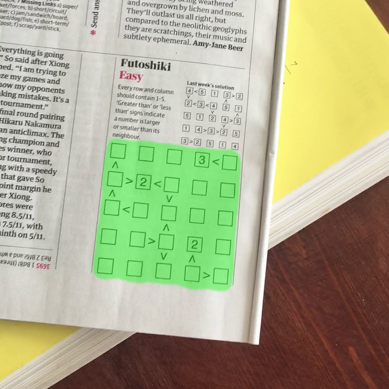
So what is Semantic Segmentation?
Semantic Segmentation is a step up in complexity versus the more common computer vision tasks such as classification and object detection. The goal is to produce a pixel-level prediction for one or more classes. This prediction is referred to as an image ‘mask’. The example here shows 3 overlaid masks for person, sheep, and dog represented by the different foreground colours.
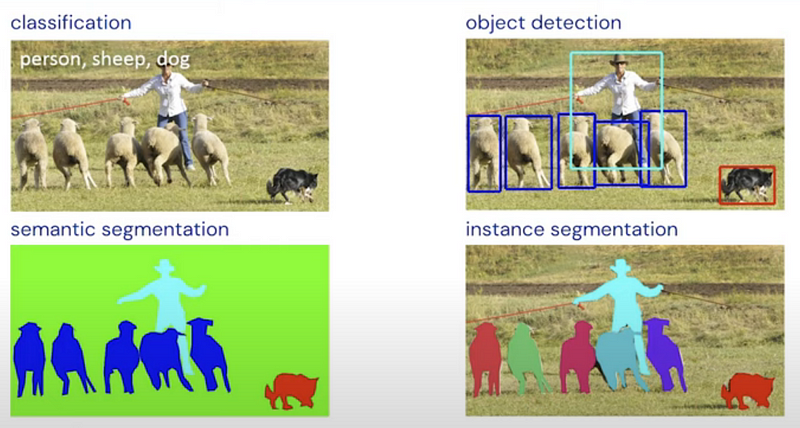
For my task, the setup is somewhat simpler as there is only one class to predict - the puzzle grid. To train the model, we need pairs of images and masks. The images we are using are full colour, so as an array will have the shape (H, W, 3). The masks on the other hand only have a single value per pixel (1 or 0), so will have shape (H, W, 1).
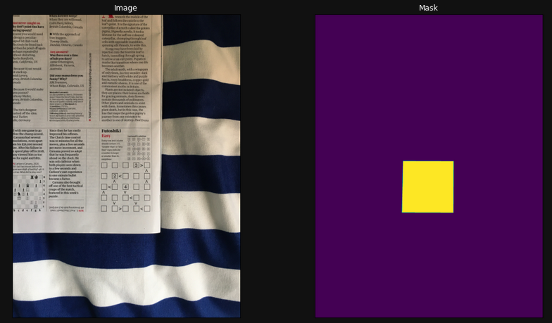
Labelling your dataset
How do we get the image masks I’ve just talked about? VIA is a great tool for image labelling — it’s open source and runs in a browser from a standalone HTML file.
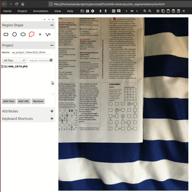
VIA lets you export labels for multiple images as a csv, with the coordinates of each polygon in json format:
{
"name":"polygon",
"all_points_x":[1973,2576,2579,1964],
"all_points_y":[2792,2816,3423,3398]
}I then wrote a custom pytorch dataloader, which converts the polygon json into a single channel image mask. The training image and the target mask are then passed on to the model.
In total I labelled 43 images, which I split 75:25 into training and validation sets. I later added an extra 7 images to serve as a test set. This might not seem like much data to be training a large neural network on - but fortunately there are some techniques we can use to get the most out of this small set of images!
Building the model
As this is a prototype, I wanted to see if the approach would achieve decent results without building the whole thing myself from scratch and potentially wasting a lot of effort. With that in mind, I used the awesome segmentation-models-pytorch library. The power of this library hinges on transfer learning, which means we can avoid having to train the entire network from a standing start.
U-Net
U-Net consists of a coupled encoder and decoder structure, which builds high level abstractions of input images before expanding out these abstractions to provide a pixel-level prediction.
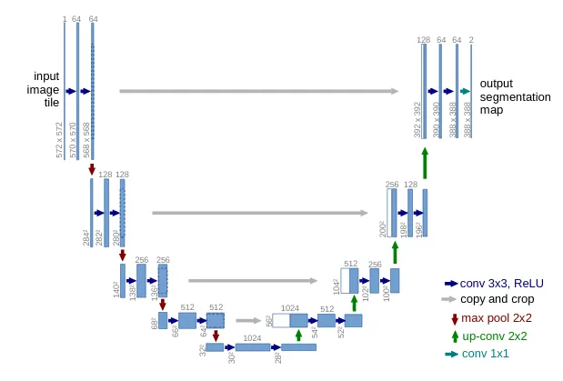
The grey arrows signify residual connections between the encoder and decoder pathways. This means that at every upwards step of the decoder, the encoder matrices of the same dimensions are concatenated together with the decoder matrices. The benefits of this are twofold:
- At each level of the decoder - which would otherwise only contain high level abstraction information of the image - the network is able to combine it’s learning about high and low level features, increasing the fidelity of predictions.
- Residual connections allow backpropagation during training to skip past layers, making optimisation easier. This is also crucial when training deeper models to avoid issues with vanishing gradients.
The beauty of this architecture is also that we can use a pre-trained model that has been used for a classification task - on a dataset such as ImageNet - as our encoder. Once we remove the final classification layer from this model, this can be connected to a decoder with untrained weights, and skip-connections are added to reflect the U-Net structure. This saves a lot of compute time, as our pre-trained encoder already has good parameters for building high levels abstractions of images.
segmentation-models-pytorch provides pre-trained weights for a number of different encoder architectures.
Encoder — EfficientNet-B3
Google AI published their EfficientNet paper in 2019 with new thinking behind how to scale up convolutional neural networks. Alongside this, the paper proposed a range of models of increasing complexity that achieve state of the art performance.
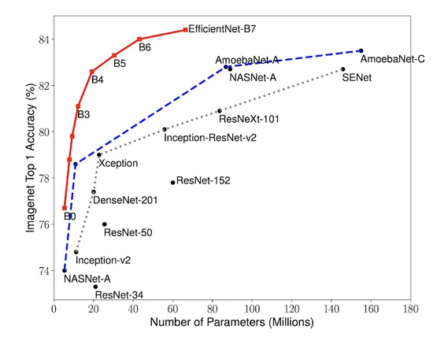
As a trade off between size and performance, I chose the B3 variant to use in my model.
Putting it all together
Specifying these architecture choices with segmentation-models-pytorch is a breeze:
import segmentation_models_pytorch as smp
import torch
ENCODER = 'efficientnet-b3'
ENCODER_WEIGHTS = 'imagenet'
CLASSES = ['grid']
ACTIVATION = 'sigmoid'
DEVICE = torch.device('cuda:0')
model = smp.Unet(
encoder_name=ENCODER,
encoder_weights=ENCODER_WEIGHTS,
classes=len(CLASSES),
activation=ACTIVATION,
).to(DEVICE)Data Augmentation
As the training dataset only contains 36 images, overfitting is a serious concern. If we train for multiple epochs over this small dataset, we might worry that our model will start fitting to the noise in this small dataset, leading to poor performance on out-of-sample examples. This problem can be somewhat mitigated by data augmentation. As each training image and mask pair is read into memory to pass to the model, we apply several layers of non-deterministic image processing, as shown below.
import albumentations as albu
def get_training_augmentation():
train_transform = [
albu.HorizontalFlip(p=0.5),
albu.ShiftScaleRotate(scale_limit=0.2, rotate_limit=20, shift_limit=0.2, p=0.8, border_mode=0),
albu.PadIfNeeded(min_height=320, min_width=320, always_apply=True, border_mode=0),
albu.RandomCrop(height=320, width=320, always_apply=True),
albu.IAAAdditiveGaussianNoise(p=0.1),
albu.IAAPerspective(p=0.5),
albu.OneOf(
[
albu.CLAHE(p=1),
albu.RandomBrightness(p=1),
albu.RandomGamma(p=1),
],
p=0.9,
)
]
return albu.Compose(train_transform)It’s useful to look at an example image to see the individual effects of each of these augmentations. This is the first image from our training set:
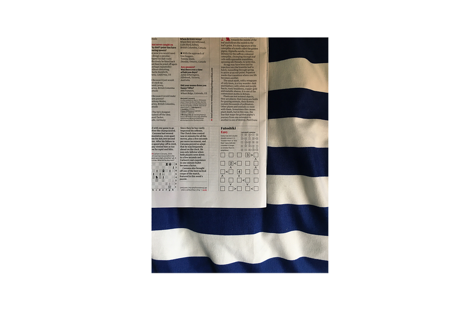
As you can see below, most of the augmentations by themselves only provide a subtle change - however when stacked up, they add enough novelty to our training data to stop the model fitting to the noise of the base dataset
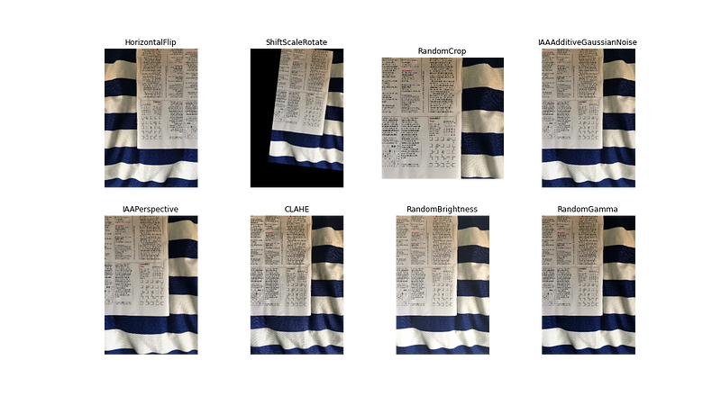
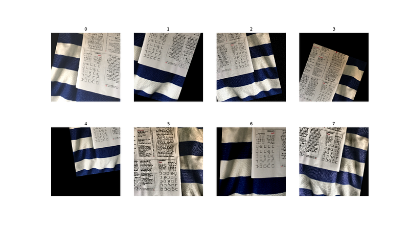
Training & Evaluation
The most commonly used loss function is pixel wise Cross-Entropy Loss - similar to what is used in general classification tasks. Here, we instead use Dice Loss, which was introduced to address the issue of class imbalance in semantic segmentation:
\[Dice Loss = \frac{2|A ∩ B|}{|A| + |B|}\]
In practice, the intersection term of this equation is approximated by calculating the element-wise product of the prediction and target mask matrices:
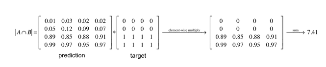
We also use Intersection-over-Union (IoU) as a scoring metric. This essentially looks at the overlapping over total area of both predicted and ground truth masks, which is a similar concept to Dice Loss.
Training regime:
- Trained for 40 epochs, initial learning rate = 5x10e-4
- After the 30th epoch, learning rate = 5x10e-5
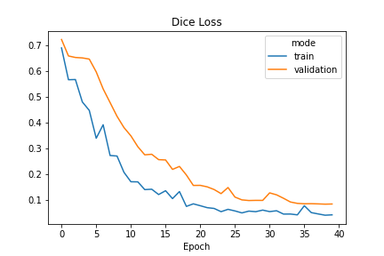
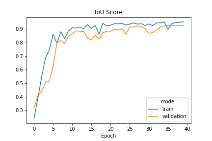
Prediction
I tested the trained model on 7 held out images from my labelled dataset, and the model achieved a IOU Score = 0.94 for these images, including some with puzzles at odd angles and as a smaller part of the image.
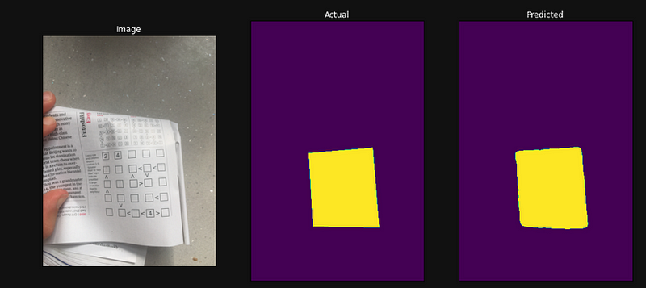
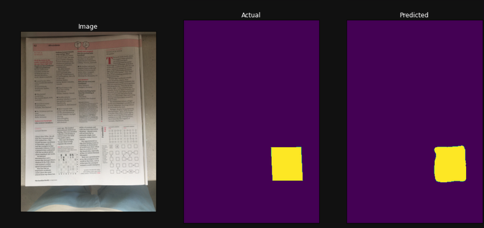
I also ran the model over all of the frames in a short video to see the results more visually, which was also pretty good - it also deals well with an object covering the puzzle!

Final Results — integration into solver tool
The enhanced version of the code base I discussed in my prior post can be found here. This version of the model shows some slight activation on background features, which is perhaps the sign of some overfitting.

To conclude, this approach showed some pretty impressive results, especially given the tiny amount of training data that was used!